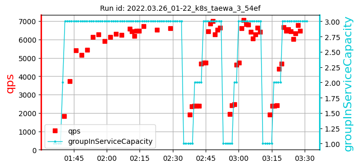

k8s_taewa_3_ samples: 12
date: 2022-06-13 11:35:54.271947
| | |
max:
504
min:
267
mean:
388
|
max:
6900
min:
5485
mean:
6428
|
max:
99.76
min:
85.46
mean:
97.32
|
max:
270
min:
79
mean:
185
|
| 1: 2022.03.16_06-52_k8s_taewa_3_4b98 | cpu=70 pods=6 treads=25 sc_min=14 warmup=90 | |
Dura-tion s | qps | CPU % | Err |
| | | [389, 447, 319]
385 | [6839, 6517, 6575]
6643 | [98.52, 99.17, 97.52]
98.40 | 92 |
| 2: 2022.03.17_09-14_k8s_taewa_3_af09 | cpu=70 pods=6 treads=25 sc_min=14 warmup=90 | |
Dura-tion s | qps | CPU % | Err |
| | | [300, 435, 396]
377 | [6535, 6613, 6147]
6432 | [98.18, 98.74, 97.84]
98.25 | 79 |
| 3: 2022.03.21_08-15_k8s_taewa_3_54ef | cpu=70 pods=6 treads=25 sc_min=14 warmup=90 | |
Dura-tion s | qps | CPU % | Err |
| | | [374, 267, 472]
371 | [6781, 6381, 6671]
6611 | [99.76, 98.31, 99.33]
99.13 | 145 |
| 4: 2022.03.22_08-41_k8s_taewa_3_54ef | cpu=70 pods=6 treads=25 sc_min=14 warmup=90 | |
Dura-tion s | qps | CPU % | Err |
| | | [326, 336, 288]
317 | [6455, 6900, 6869]
6741 | [98.44, 99.48, 98.79]
98.90 | 270 |
| 5: 2022.03.25_08-50_k8s_taewa_3_54ef | cpu=70 pods=6 treads=25 sc_min=14 warmup=90 | |
Dura-tion s | qps | CPU % | Err |
| | | [280, 443, 457]
393 | [5933, 6218, 5485]
5879 | [95.9, 96.96, 98.32]
97.06 | 144 |
| 6: 2022.03.26_01-22_k8s_taewa_3_54ef | cpu=70 pods=6 treads=25 sc_min=14 warmup=90 | |
Dura-tion s | qps | CPU % | Err |
| |  | [481, 376, 383]
413 | [6712, 6523, 6617]
6617 | [98.13, 97.81, 98.5]
98.15 | 236 |
| 7: 2022.03.27_23-34_k8s_taewa_3_0c47 | cpu=70 pods=6 treads=25 sc_min=14 warmup=90 | |
Dura-tion s | qps | CPU % | Err |
| | | [390, 405, 446]
414 | [6281, 6123, 6306]
6237 | [98.3, 99.06, 97.49]
98.28 | 268 |
| 8: 2022.03.28_06-43_k8s_taewa_3_0c47 | cpu=70 pods=6 treads=25 sc_min=14 warmup=90 | |
Dura-tion s | qps | CPU % | Err |
 | | | [463, 411, 349]
408 | [6181, 6323, 6424]
6309 | [92.65, 97.9, 93.32]
94.62 | 211 |
| 9: 2022.03.30_03-56_k8s_taewa_3_41cf | cpu=70 pods=6 treads=25 sc_min=14 warmup=90 | |
Dura-tion s | qps | CPU % | Err |
| |  | [436, 431, 348]
405 | [5732, 6408, 6579]
6240 | [99.75, 92.31, 92.19]
94.75 | 143 |
| 10: 2022.04.04_22-12_k8s_taewa_3_41cf | cpu=70 pods=6 treads=25 sc_min=14 warmup=90 | |
Dura-tion s | qps | CPU % | Err |
| | | [375, 450, 405]
410 | [6333, 6549, 6152]
6345 | [85.46, 94.62, 98.81]
92.96 | 241 |
| 11: 2022.04.06_09-07_k8s_taewa_3_41cf | cpu=70 pods=6 treads=25 sc_min=14 warmup=90 | |
Dura-tion s | qps | CPU % | Err |
| | | [353, 376]
365 | [6816, 6834, 6161]
6603 | [98.92, 98.92, 98.69]
98.84 | 260 |
| 12: 2022.04.17_08-20_k8s_taewa_3_41cf | cpu=70 pods=6 treads=25 sc_min=14 warmup=90 | |
Dura-tion s | qps | CPU % | Err |
| | | [385, 279, 504]
390 | [6516, 6668, 6254]
6479 | [97.78, 98.66, 99.18]
98.54 | 132 |
k8s_taewa_3_ samples: 12
date: 2022-06-13 11:35:54.271947
| | |
max:
504
min:
267
mean:
388
|
max:
6900
min:
5485
mean:
6428
|
max:
99.76
min:
85.46
mean:
97.32
|
max:
270
min:
79
mean:
185
|